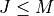
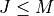
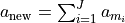
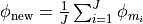

nmrespy.core¶
- class nmrespy.core.Estimator(source, data, path, sw, off, sfo, nuc, fmt, _origin=None)[source]¶
Estimation class
Note
The methods
new_bruker(),new_synthetic_from_data()andnew_synthetic_from_parameters()generate instances of the class. The methodfrom_pickle()loads an estimator instance that was previously saved usingto_pickle(). While you can manually input the listed parameters as arguments to initialise the class, it is more straightforward to use one of these.- Parameters
source ('bruker_fid', 'bruker_pdata', 'synthetic') – The type of data imported. ‘bruker_fid’ indicates the data is derived from a FID file (fid for 1D data, ser for 2D data). ‘bruker_pdata’ indicates the data is derived from files found in a pdata directory (1r for 1D data; 2rr for 2D data). ‘synthetic’ indicates that the data is synthetic.
data (numpy.ndarray) – The data associated with the binary file in path.
path (pathlib.Path or None) – The path to the directory contaioning the NMR data.
sw ([float] or [float, float]) – The experiment sweep width in each dimension (Hz).
offset ([float] or [float, float]) – The transmitter’s offset frequency in each dimension (Hz).
sfo ([float] or [float, float] or None) – The transmitter frequency in each dimension (MHz)
nuc ([str] or [str, str] or None) – The nucleus in each dimension. Elements will be of the form ‘<mass><element>’, where ‘<mass>’ is the mass number of the isotope and ‘<element>’ is the chemical symbol of the element.
fmt (str or None) – The format of the binary file from which the data was obtained. Of the form ‘<endian><unitsize>’, where ‘<endian>’ is either ‘<’ (little endian) or ‘>’ (big endian), and ‘<unitsize>’ is either ‘i4’ (32-bit integer) or ‘f8’ (64-bit float).
_origin (dict or None, default None) – For internal use. Specifies how the instance was initalised. If None, implies that the instance was initialised manually, rather than using one of
new_bruker(),new_synthetic_from_data()andnew_synthetic_from_parameters().
- _check_if_none(name, kill, method=None)[source]¶
Retrieve attributes that may be assigned the value None. Return None/raise error depending on the value of
kill- Parameters
name (str) – The name of the attribute requested.
kill (bool) – Whether or not to raise an error if the desired attribute is None.
method (str or None, default: None) – The name of the method that needs to be run to obtain the desired attribute. If None, it implies that the attribute requested was never given to the class in the first place.
- Returns
attribute – The attribute requested.
- Return type
any
- _get_array(name, kill, freq_unit)[source]¶
Returns an array (result or errors), wioth frequencies in either Hz or ppm
- _get_data_sw_offset()[source]¶
Retrieve data, sweep width and offset, based on whether frequency filtration have been applied.
- Returns
data (numpy.ndarray)
sw ([float] or [float, float]) – Sweep width (Hz).
offset ([float] or [float, float]) – Transmitter offset (Hz).
Notes
If self.filter_info is equal to None, self.data will be analysed
If self.filter_info is an instance of
nmrespy.freqfilter.FrequencyFilter, self.filter_info.filtered_signal will be analysed.
- add_oscillators(oscillators)[source]¶
Adds new oscillators an estimation result.
- Parameters
oscillators (numpy.ndarray) –
An array of the new oscillator(s) to add to the array. NB oscillators should always be a two-dimensional array, even if only one oscillator is being added:
>>> oscillators = np.array([[a, φ, f, η]]) # 1D >>> oscillators = np.array([[a, φ, f1, f2, η1, η2]]) # 2D >>> # or, equivalently: >>> oscillators = np.insert_axis( ... np.array([a, φ, f, η]), axis=1 ... ) # 1D >>> oscillators = np.insert_axis( ... np.array([a, φ, f1, f2, η1, η2]), axis=1 ... ) # 2D
- frequency_filter(region, noise_region, cut=True, cut_ratio=3.0, region_unit='ppm')[source]¶
Generates frequency-filtered data from self.data.
- Parameters
region ([[int, int]], [[int, int], [int, int]], [[float, float]] or) –
[[float – Cut-off points of the spectral region to consider. If the signal is 1D, this should be of the form [[a,b]] where a and b are the boundaries. If the signal is 2D, this should be of the form [[a,b], [c,d]] where a and b are the boundaries in dimension 1, and c and d are the boundaries in dimension 2. The ordering of the bounds in each dimension is not important.
float] – Cut-off points of the spectral region to consider. If the signal is 1D, this should be of the form [[a,b]] where a and b are the boundaries. If the signal is 2D, this should be of the form [[a,b], [c,d]] where a and b are the boundaries in dimension 1, and c and d are the boundaries in dimension 2. The ordering of the bounds in each dimension is not important.
[float – Cut-off points of the spectral region to consider. If the signal is 1D, this should be of the form [[a,b]] where a and b are the boundaries. If the signal is 2D, this should be of the form [[a,b], [c,d]] where a and b are the boundaries in dimension 1, and c and d are the boundaries in dimension 2. The ordering of the bounds in each dimension is not important.
float]] – Cut-off points of the spectral region to consider. If the signal is 1D, this should be of the form [[a,b]] where a and b are the boundaries. If the signal is 2D, this should be of the form [[a,b], [c,d]] where a and b are the boundaries in dimension 1, and c and d are the boundaries in dimension 2. The ordering of the bounds in each dimension is not important.
noise_region ([[int, int]], [[int, int], [int, int]],) –
[[float – Cut-off points of the spectral region to extract the spectrum’s noise variance. This should have the same structure as region.
or [[float (float]]) – Cut-off points of the spectral region to extract the spectrum’s noise variance. This should have the same structure as region.
float] – Cut-off points of the spectral region to extract the spectrum’s noise variance. This should have the same structure as region.
[float – Cut-off points of the spectral region to extract the spectrum’s noise variance. This should have the same structure as region.
float]] – Cut-off points of the spectral region to extract the spectrum’s noise variance. This should have the same structure as region.
cut (bool, default: True) – If False, the filtered signal will comprise the same number of data points as the original data. If True, prior to inverse FT, the data will be sliced, with points not in the region specified by cut_ratio being removed.
cut_ratio (float, default: 2.5) – If cut is True, defines the ratio between the cut signal’s sweep width, and the region width, in each dimesnion. It is reccommended that this is comfortably larger than 1.0. 2.0 or higher should be appropriate.
region_unit ('ppm', 'hz' or 'idx', default: 'ppm') – The unit the elements of region and noise_region are expressed in.
Notes
This method assigns the attribute filter_info to an instance of
nmrespy.freqfilter.FrequencyFilter. To obtain information on the filtration, useget_filter_info().
- classmethod from_pickle(path)[source]¶
Loads an intance of
Estimator, which was saved previously usingto_pickle().- Parameters
path (str) – The path to the pickle file. DO NOT INCLUDE THE FILE EXTENSION.
- Returns
estimator
- Return type
Notes
Warning
From the Python docs:
“The pickle module is not secure. Only unpickle data you trust. It is possible to construct malicious pickle data which will execute arbitrary code during unpickling. Never unpickle data that could have come from an untrusted source, or that could have been tampered with.”
You should only use
from_pickle()on files that you are 100% certain were generated usingto_pickle(). If you load pickled data from a .pkl file, and the resulting output is not an instance ofEstimator, an error will be raised.
- get_bf(kill=True)[source]¶
Return the transmitter’s basic frequency for each channel (MHz).
- Parameters
kill (bool, default: True) –
If the path is None, kill specifies how the method will act:
If True, an AttributeIsNoneError is raised.
If False, None is returned.
- Returns
bf
- Return type
[float] or [float, float]
- get_datapath(type_='Path', kill=True)[source]¶
Return path of the data directory.
- Parameters
type ('Path' or 'str', default: 'Path') – The type of the returned path. If ‘Path’, the returned object is an instance of pathlib.Path. If ‘str’, the returned object is an instance of str.
kill (bool, default: True) –
If the path is None, kill specifies how the method will act:
If True, an AttributeIsNoneError is raised.
If False, None is returned.
- Returns
path
- Return type
str or pathlib.Path
- get_errors(kill=True, freq_unit='hz')[source]¶
Returns the errors of the estimation result derived from
nonlinear_programming()- Parameters
kill (bool, default: True) –
If self.errors is None, kill specifies how the method will act:
If True, an AttributeIsNoneError is raised.
If False, None is returned.
freq_unit ('hz' or 'ppm', default: 'hz') –
- get_filter_info(kill=True)[source]¶
Returns information relating to frequency filtration.
- Parameters
kill (bool, default: True) – If filter_info is None, and kill is True, an error will be raised. If kill is False, None will be returned.
- Returns
filter_info
- Return type
Notes
There are numerous methods associated with filter_info for obtaining relavent infomation about the filtration. See
nmrespy.freqfilter.FrequencyFilterfor details.
- get_n()[source]¶
Return the number of datapoints in each dimension
- Returns
n
- Return type
[int] or [int, int]
- get_nucleus(kill=True)[source]¶
Return the target nucleus of each channel.
- Parameters
kill (bool, default: True) –
If the path is None, kill specifies how the method will act:
If True, an AttributeIsNoneError is raised.
If False, None is returned.
- Returns
nuc
- Return type
[str] or [str, str]
- get_offset(unit='hz', kill=True)[source]¶
Return the transmitter’s offset frequency in each dimesnion.
- Parameters
unit ('hz' or 'ppm', default: 'hz') –
- Returns
offset ([float] or [float, float])
kill (bool, default: True) – If unit is ‘ppm’, but self.sfo is None, kill specifies how the method will act:
If True, an AttributeIsNoneError is raised.
If False, None is returned.
- Raises
InvalidUnitError – If unit is not ‘hz’ or ‘ppm’
Notes
If unit is set to ‘ppm’ and self.sfo is not specified (None), there is no way of retreiving the offset in ppm. None will be returned.
- get_result(kill=True, freq_unit='hz')[source]¶
Returns the estimation result
- Parameters
kill (bool, default: True) –
If self.result is None, kill specifies how the method will act:
If True, an AttributeIsNoneError is raised.
If False, None is returned.
freq_unit ('hz' or 'ppm', default: 'hz') –
- get_sfo(kill=True)[source]¶
Return transmitter frequency for each channel (MHz).
- Parameters
kill (bool, default: True) –
If the path is None, kill specifies how the method will act:
If True, an AttributeIsNoneError is raised.
If False, None is returned.
- Returns
sfo
- Return type
[float] or [float, float]
- get_shifts(unit='hz', meshgrid=False, kill=True)[source]¶
Return the sampled frequencies consistent with experiment’s parameters (sweep width, transmitter offset, number of points).
- Parameters
unit ('ppm' or 'hz', default: 'ppm') – The unit of the value(s).
meshgrid (bool) – Only appicable for 2D data. If set to True, the shifts in each dimension will be fed into numpy.meshgrid
kill (bool) –
If self.sfo (need to get shifts in ppm) is None, kill specifies how the method will act:
If True, an AttributeIsNoneError is raised.
If False, None is returned.
- Returns
shifts – The frequencies sampled along each dimension.
- Return type
[numpy.ndarray] or [numpy.ndarray, numpy.ndarray]
- Raises
InvalidUnitError – If unit is not ‘hz’ or ‘ppm’
Notes
The shifts are returned in ascending order.
- get_sw(unit='hz', kill=True)[source]¶
Return the experiment sweep width in each dimension.
- Parameters
unit ('hz' or 'ppm', default: 'hz') –
kill (bool, default: True) –
If unit is ‘ppm’, but self.sfo is None, kill specifies how the method will act:
If True, an AttributeIsNoneError is raised.
If False, None is returned.
- Returns
sw
- Return type
[float] or [float, float]
- Raises
InvalidUnitError – If unit is not ‘hz’ or ‘ppm’
Notes
If unit is set to ‘ppm’ and self.sfo is not specified (None), there is no way of retreiving the sweep width in ppm. None will be returned.
- get_timepoints(meshgrid=False)[source]¶
Return the sampled times consistent with experiment’s parameters (sweep width, number of points).
- Parameters
meshgrid (bool) –
Only appicable for 2D data. If set to True, the time-points in each dimension will be fed into numpy.meshgrid
- Returns
tp – The times sampled along each dimension (seconds).
- Return type
[numpy.ndarray] or [numpy.ndarray, numpy.ndarray]
- make_fid(n=None, oscillators=None, kill=True)[source]¶
Constructs a synthetic FID using a parameter estimate and experiment parameters.
- Parameters
n ([int], or [int, int], or None default: None) – The number of points to construct the FID with in each dimesnion. If None,
get_n()will be used, meaning the signal will have the same number of points as the original data.oscillators (None or list, default: None) – Which oscillators to include in result. If None, all oscillators will be included. If a list of ints, the subset of oscillators corresponding to these indices will be used. Note that all elements should be in
range(self.result.shape[0]).kill (bool, default: True) –
If self.result is None, kill specifies how the method will act:
If True, an AttributeIsNoneError is raised.
If False, None is returned.
- Returns
fid (numpy.ndarray) – The generated FID.
tp ([numpy.ndarray] or [numpy.ndarray, numpy.ndarray]) – The time-points at which the signal is sampled, in each dimension.
See also
- manual_phase_data(max_p1=None)[source]¶
Perform manual phase correction of self.data.
Zero- and first-order phase pharameters are determined via interaction with a Tkinter- and matplotlib-based graphical user interface.
- Parameters
max_p1 (float or None, default: None) – Specifies the range of first-order phases permitted. For each dimension, the user will be allowed to choose a value of p1 within [-max_p1, max_p1]. By default, max_p1 will be
10 * numpy.pi.
- matrix_pencil(M=0, trim=None, fprint=True)[source]¶
Implementation of the 1D Matrix Pencil Method 1 2 or 2D Modified Matrix Enchancement and Matrix Pencil (MMEMP) method 3 4 with the option of Model Order Selection using the Minumum Descrition Length (MDL) 5.
- Parameters
M (int, default: 0) – The number of oscillators to use in generating a parameter estimate. If M is set to 0, the number of oscillators will be estimated using the MDL.
trim ([int], [int, int], or None, default: None) – If trim is a list, the analysed data will be sliced such that its shape matches trim, with the initial points in the signal being retained. If trim is None, the data will not be sliced. Consider using this in cases where the full signal is large, such that the method takes a very long time, or your PC has insufficient memory to process it.
fprint (bool, default: True) – If True (default), the method provides information on progress to the terminal as it runs. If False, the method will run silently.
Notes
The data analysed will be the following:
If self.filter_info is equal to None, self.data will be analysed
If self.filter_info is an instance of
nmrespy.freqfilter.FrequencyFilter, self.filter_info.filtered_signal will be analysed.
For developers: See
_get_data_sw_offset()Upon successful completion is this method, self.mpm_info will be updated with an instance of
nmrespy.mpm.MatrixPencil.References
- 1
Yingbo Hua and Tapan K Sarkar. “Matrix pencil method for estimating parameters of exponentially damped/undamped sinusoids in noise”. In: IEEE Trans. Acoust., Speech, Signal Process. 38.5 (1990), pp. 814–824.
- 2
Yung-Ya Lin et al. “A novel detection–estimation scheme for noisy NMR signals: applications to delayed acquisition data”. In: J. Magn. Reson. 128.1 (1997), pp. 30–41.
- 3
Yingbo Hua. “Estimating two-dimensional frequencies by matrix enhancement and matrix pencil”. In: [Proceedings] ICASSP 91: 1991 International Conference on Acoustics, Speech, and Signal Processing. IEEE. 1991, pp. 3073–3076.
- 4
Fang-Jiong Chen et al. “Estimation of two-dimensional frequencies using modified matrix pencil method”. In: IEEE Trans. Signal Process. 55.2 (2007), pp. 718–724.
- 5
M. Wax, T. Kailath, Detection of signals by information theoretic criteria, IEEE Transactions on Acoustics, Speech, and Signal Processing 33 (2) (1985) 387–392.
- merge_oscillators(indices)[source]¶
Merges the oscillators corresponding to indices.
Removes the osccilators specified, and constructs a single new oscillator with a cumulative amplitude, and averaged phase, frequency and damping.
- Parameters
indices (list, tuple or numpy.ndarray) – A list of indices corresponding to the oscillators to be merged. The elements of indices should be ints that are in
range(result.shape[0]), where result is the current estimation result.
Notes
Assuming that an estimation result contains a subset of oscillators denoted by indices
 , where
, the new oscillator formed by the merging of the
oscillator subset will possess the following parameters:
, where
, the new oscillator formed by the merging of the
oscillator subset will possess the following parameters:



- classmethod new_bruker(dir, ask_convdta=True)[source]¶
Generate an instance of
Estimatorfrom a Bruker-formatted data directory.- Parameters
dir (str) – The path to the data containing the data of interest.
ask_convdta (bool) – See
nmrespy.load_bruker()
- Returns
estimator
- Return type
Notes
For a more detailed specification of the directory requirements, see
nmrespy.load_bruker().
- nonlinear_programming(trim=None, **kwargs)[source]¶
Estimation of signal parameters using nonlinear programming, given an inital guess.
- Parameters
trim (None, [int], or [int, int], default: None) – If trim is a list, the analysed data will be sliced such that its shape matches trim, with the initial points in the signal being retained. If trim is None, the data will not be sliced. Consider using this in cases where the full signal is large, such that the method takes a very long time, or your PC has insufficient memory to process it.
**kwargs –
Properties of
nmrespy.nlp.nlp.NonlinearProgramming. Valid arguments:phase_variance
method
bound
max_iterations
amp_thold
freq_thold
negative_amps
fprint
Other keyword arguments that are valid in
nmrespy.nlp.nlp.NonlinearProgramming()will be ignored (these are generated internally by the class instance).
- Raises
PhaseVarianceAmbiguityError – Raised when
phase_varianceis set toTrue, but the user has specified that they do not wish to optimise phases using themodeargument.
Notes
The data analysed will be the following:
If self.filter_info is equal to None, self.data will be analysed
If self.filter_info is an instance of
nmrespy.freqfilter.FrequencyFilter, self.filter_info.filtered_signal will be analysed.
Upon successful completion is this method, self.result and self.errors will be updated.
See also
- phase_data(p0=None, p1=None)[source]¶
Phase self.data
- Parameters
p0 ([float], [float, float], or None default: None) – Zero-order phase correction in each dimension in radians. If None, the phase will be set to 0.0 in each dimension.
p1 ([float], [float, float], or None default: None) – First-order phase correction in each dimension in radians. If None, the phase will be set to 0.0 in each dimension.
- plot_result(**kwargs)[source]¶
Produces a figure of an estimation result.
The figure consists of the original data, in the Fourier domain, along with each oscillator.
- Parameters
kwargs (Properties of
nmrespy.write.write_result().) –Valid arguments are:
shifts_unit
plot_residual
plot_model
residual_shift
model_shift
data_color
oscillator_colors
residual_color
model_color
labels
stylesheet
Other keyword arguments that are valid in
nmrespy.plot.plot_result()will be ignored (these are generated internally by the class instance).- Raises
AttributeIsNoneError – If no parameter estimate derived from nonlinear programming is found (see
nonlinear_programming()).
See also
- remove_oscillators(indices)[source]¶
Removes the oscillators corresponding to
indices.- Parameters
indices (list) – A list of indices corresponding to the oscillators to be removed. The elements of indices should be ints that are in
range(result.shape[0]), where result is the current estimation result.
- save_logfile(path='./nmrespy_log', force_overwrite=False)[source]¶
Saves log file of class instance usage to a specified path.
- Parameters
path (str, default: './nmrespy_log') – The path to save the file to. DO NOT INCLUDE A FILE EXTENSION. .log will be added automatically.
force_overwrite (bool. default: False) –
Defines behaviour if
f'{path}.log'already exists:If force_overwrite is set to False, the user will be prompted if they are happy overwriting the current file.
If force_overwrite is set to True, the current file will be overwritten without prompt.
- split_oscillator(index, separation_frequency=None, unit='hz', split_number=2, amp_ratio=None)[source]¶
Splits the oscillator corresponding to index.
Removes an oscillator, and incorporates two or more oscillators whose cumulative amplitudes match that of the removed oscillator.
- Parameters
index (int) – Array index of the oscilator to be split.
separation_frequency (float, or None default: None) – The frequency separation given to adjacent oscillators formed from the splitting. If None, the splitting will be set to
sw / nwhere sw is the sweep width and n is the number of points in the data.unit ('hz' or 'ppm', default: 'hz') – The unit of separation_frequency.
split_number (int, default: 2) – The number of peaks to split the oscillator into.
amp_ratio (list or None, default: None) – The ratio of amplitudes to be fulfilled by the newly formed peaks. If a list,
len(amp_ratio) == split_numbermust be satisfied. The first element will relate to the highest frequency oscillator constructed, and the last element will relate to the lowest frequency oscillator constructed. If None, all oscillators will be given equal amplitudes.
- to_pickle(path='./estimator', force_overwrite=False, fprint=True)[source]¶
Converts the class instance to a byte stream using Python’s “Pickling” protocol, and saves it to a .pkl file.
- Parameters
path (str, default: './estimator') – Path of file to save the byte stream to. DO NOT INCLUDE A `’.pkl’` EXTENSION! ‘.pkl’ is added to the end of the path automatically.
force_overwrite (bool, default: False) –
Defines behaviour if
f'{path}.pkl'already exists:If force_overwrite is set to False, the user will be prompted if they are happy overwriting the current file.
If force_overwrite is set to True, the current file will be overwritten without prompt.
fprint (bool, default: True) – Specifies whether or not to print infomation to the terminal.
Notes
This method complements
from_pickle(), in that an instance saved usingto_pickle()can be recovered bypickle_load().
- view_data(domain='frequency', freq_xunit='ppm', component='real')[source]¶
Generate a simple, interactive plot of the data using matplotlib.
- Parameters
domain ('frequency' or 'time', default: 'frequency') – The domain of the sig.
freq_xunit ('ppm' or 'hz', default: 'ppm') – The unit of the x-axis, if domain is set as ‘frequency’. If domain is set as ‘time’, the x-axis unit will the seconds.
component ('real', 'imag' or 'both', default: 'real') – The component of the data to display. ‘both’ displays both the real and imaginary components
- write_result(**kwargs)[source]¶
Saves an estimation result to a file in a human-readable format (text, PDF, CSV).
- Parameters
kwargs (Properties of
nmrespy.write.write_result().) –Valid arguments are:
path
description
sig_figs
sci_lims
fmt
force_overwrite
fprint
Other keyword arguments that are valid in
nmrespy.write.write_result()will be ignored (these are generated internally by the class instance).- Raises
AttributeIsNoneError – If no parameter estimate derived from nonlinear programming is found (see
nonlinear_programming()).
See also